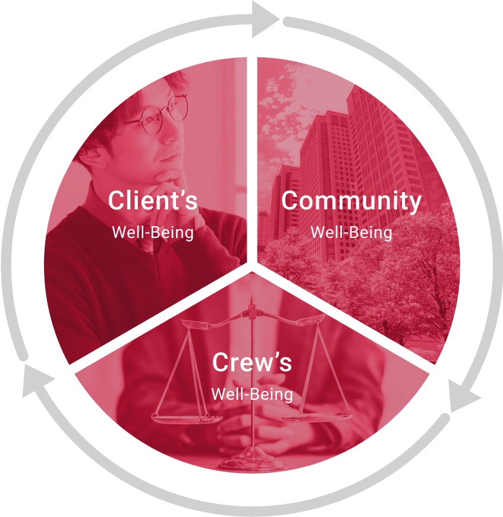
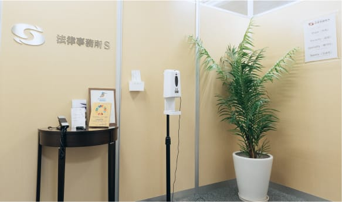
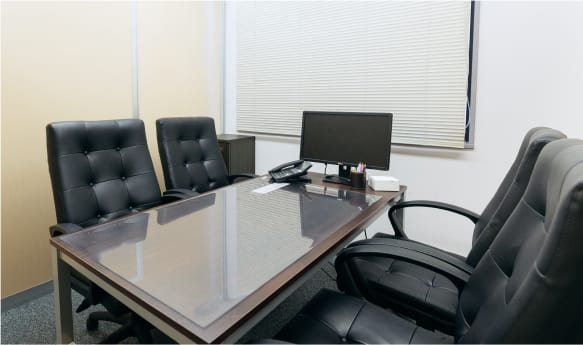
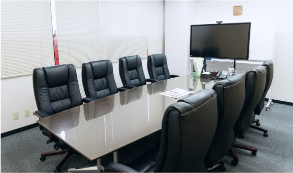

OFFICE 事務所案内
相模原および横浜エリアを拠点に
地域の方々の企業活動、日々の暮らしを守ります
わたしたちは相模原および横浜に事務所を構え、地域の皆さまの企業活動や日々の暮らしを守るため、企業法務から民事トラブルまで、幅広いリーガルサービスを提供しております。
中小企業法務をはじめとする様々な分野に精通した弁護士とリーガルスタッフがチーム一丸となり、質の高いリーガルサービスを提供し、困難な課題や事件を解決へと導きます。
地域の企業や市民の皆さまが安心して相談できるパートナーとして、全力でサポートいたします。
理念 Three Well-Being
私たちは、Three Well-Being を目指し活動しています。
-
Client’s Well-Being
私たちは、困難な課題・事件の解決を通じて、クライアントが一人では辿り着くことができないanother future（もう一つの未来）を共に創造します。
-
Community Well-Being
私たちは、事件解決を積み重ねて地域社会のコンプライアンスを高め、豊かで笑顔に満ちた持続可能な社会の実現を目指します。
-
Crew’s Well-Being
私たちは、クルーが高い解決力を身につけ、法律事務所Sと出会わなければ辿り着くことができないanother futureを実現する人生を共に育みます。その高い解決力をもって更なる困難な課題・事件解決を実現します。
わたしたちの VISION と MISSION
そして実現するための、成長戦略とクレドについて
- VISION
- 法と解決力が人の可能性を増幅させる社会
- MISSION
-
Create Another future ～強く、速く、そして共に～
私たちは、選ばれる解決力であなたがまだ見ぬ「もう一つのミライ」を創造します
そのために、クレド（4S）に磨きをかけ、常に強く、速く、そしてあなたに寄り添い続けます
- 成長戦略
-
MISSIONを実現し、「選ばれる解決力」を磨き続るために
-
事件解決の圧倒的な蓄積
創業以来向き合ってきた数千の案件は、クライアントのかけがえのない未来に繋がり、そして私たちを強くしてくれました。その実績は法律顧問185社以上、中小企業の相談実績2000件以上にのぼり（2023年1月1日現在）、また常に500の案件と向き合っており、この解決の蓄積が今後もさらに私たちを強くします。
-
One Strength を有する人材の創出
事務所には弁護士資格のみならず、税理士、中小企業診断士、行政書士、宅地建物取引士、FP、各種パラリーガル資格などを保有する人材が揃い、多様な法的課題への対応が可能です。また、法的能力に限らない所員の能力開発推進制度を整備し、あらゆる角度から解決力が高い人材を開発します。
-
Technology ＆ Innovation の最大限の活用
私たちは、電子契約、文書管理、契約書レビュー、検索サービスなど様々な分野でアプリやソフト、AIの導入を積極的に推進し、業務効率と生産性を高めます。
-
事件解決の圧倒的な蓄積
- クレド（行動規範）
-
MISSIONを実現するために、すべてのスタッフが心がけ、行動します
-
Share
私たちは、クライアントの皆様の想いを共有し、共に未来へ向けて歩みます。
-
Sincerity
私たちは、常に真心をもって、誠実に業務に取り組みます。
-
Speciality
私たちは、日々研鑽を重ね、高度な専門性を武器とします。
-
Speedy
私たちは、時間を価値と捉え、紛争を迅速に解決します。
-
Share
法律事務所Sの3つの強み
-
寄り添った
コミュニケーションクライアント一人ひとりの悩みや不安に耳を傾け、親身になって対応します。信頼関係を大切にし、安心して相談できる環境を提供します。
-
解決にこだわる
姿勢問題解決のために最善の方法を追求します。クライアントの利益を最大限に守るため、粘り強く対応し、最後まで諦めません。
-
最新テクノロジーの
活用AIを活用した契約書チェックなど、最新のテクノロジーを導入。迅速かつ正確な法務サービスを提供し、クライアントの安心を支えます。
事務所ロゴマーク
依頼者の皆様と手を取り合い、
問題解決に向かう姿、そして希望の光を表現
私たちは、依頼者の皆様と手を取り合い、協力して問題解決に取り組みます。
このロゴマークは、私たちと依頼者の皆様が問題解決に向けて手と手を取り合う様をモチーフとした上で、私たちが鋭く問題に切り込み解決する様を、「希望の光」を意味する白い切り込みで表現したものです。
そして、ロゴからは、弊所の頭文字「S」が浮かび上がります。
GREETING 代表よりごあいさつ
法律事務所Sは、2009年10月、相模原地域出身の弁護士で設立されました。人口70万人を擁する 相模原をはじめとして、座間、町田、八王子、立川、多摩、海老名、厚木、大和といった近隣地域では、多くの人々が日常生活を送り、多くの企業が経済活動を営んでいるため、必然的に、多数の紛争が生じます。
しかし従来、これらの地域は東京などの大都市に比べ、 弁護士が少ない地域でした。その結果、弁護士に対する敷居が高くなり、弁護士介入が望ましい紛争に弁護士が介入しない、という事態が生じる事が、しばしばありました。
そこで我々は、地域の企業や市民の皆様に貢献し、愛される法律事務所となるため、弊所を設立しました。
私たちは今後も、会社や企業の紛争（債権回収、請負代金請求、解雇、残業代請求、契約書作成、顧問弁護士等）から、個人間の紛争（相続、遺言、遺産分割、交通事故、建物明渡し、不動産売買、不動産賃貸借トラブル、成年後見、任意後見、財産管理、自己破産、個人再生（民事再生）、債務整理、刑事弁護、被害者参加）まで、幅広い分野で依頼者の皆様に迅速かつ的確なリーガルサービスを提供して参ります。
どうぞよろしくお願いいたします。
法律事務所S（本店）
のご案内
弊所本店はJR相模原駅南口より徒歩3分、大通り沿いの便利な立地にございます。
事務所内には大小3つのミーティングルームがあり、ご相談者様に安心してお話ししていただけるよう、防音および視線を遮る工夫をしております。
-

事務所に入ってすぐの受付
-

周囲を気にせずご相談いただけます
-

大人数での相談も可能な環境をご用意
本店バーチャルツアー
気になる事務所内部をお好きな角度でご覧いただけます
事務所概要
- 法律事務所S（本店）
-
住所 〒252-0231 神奈川県相模原市中央区相模原2丁目1-5 サトウビル5階 代表 代表弁護士 藤田 寛之
代表弁護士 宇田川 隼電話番号 042-704-6577 FAX 042-704-6578 営業時間 9:30～17:45 定休日 土・日曜、祝日 設立 2009年10月
- 法律事務所S（横浜オフィス） 弁護士法人 SY従たる事務所
-
住所 〒231-0023 神奈川県横浜市中区山下町1シルクセンタービル904 代表 横浜オフィスパートナー 弁護士 古林能敬 電話番号 045-263-6100 FAX 045-263-6167 営業時間 9:30～17:00 定休日 土・日曜、祝日 設立 2019年4月